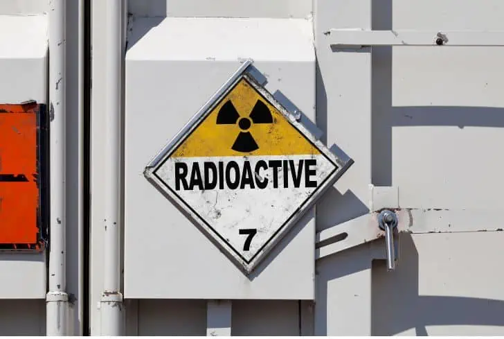
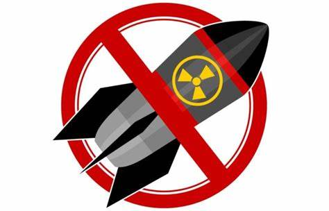
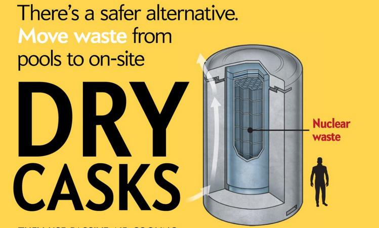

1. Proper Method of Disposing of Radioactive Waste
Radioactive waste still has some level of radiation and shouldn’t be disposed of in the same way as regular waste. It shouldn’t be incinerated or buried. Instead, it should be stored in heavy and thick concrete containers to avoid any chances of seepage.
But again, as we said earlier, there’s no permanent way to keep radioactive elements perfectly contained. As such, the best thing is to dilute the radiation. And whether containing or diluting it, professional assistance should always be sought.
2. Proper Labeling
It is also necessary to label any material with radioactive content and provide the necessary precautions on the label’s content. This is because radiation can enter the body by a mere touch of radioactive material. Containers with such elements should be well labeled to make one use protective gear when handling them.
3. Banning of Nuclear Tests
It has already been proven that nuclear power has a lot of latent power that is very destructive. And while the tests performed on them are usually not ill-intended, some of the radioactive elements released during these tests escape from one ecosystem to another, eventually affecting the organisms in that ecosystem.
For that reason, it’s essential to have these tests banned or at least have protective measures taken to contain the radioactive elements.
4. Alternative Energy Sources
The evolution and use of nuclear power was not a bad thing initially. However, considering the damage and threats it has on the environment, it is high time for its use to be discontinued and for the world to perhaps focus on alternative and environmentally friendly energy sources – like renewable sources of energy, namely solar, hydroelectric, and wind power.
The use of radioactivity to generate energy in nuclear power plants, for example, produces more radiation to the atmosphere considering the waste released from the various processes and combustion.
5. Proper Storage
Containers carrying radioactive material must be stored properly. For starters, such substances should be stored in radiation-proof containers to ensure no seeping or leakage during handling. Proper storage means no harm and can minimize cases of accidental leakage.
6. Reusing

Since it is not easy to store or dispose of waste, it can be recycled and used for other purposes, thereby protecting the environment.
7. Precautions at the Personal Level
There may be the possibility of contamination if one owns a house located near a nuclear power plant. In that case, it is recommended to check the level of radon gas in your building.
The radon level needs to be removed. Those who work with radioactive material are also at significant risk. They need protective measures to keep away from radioactive contamination.